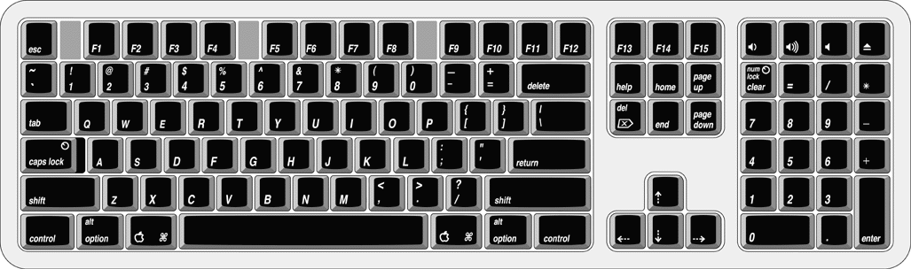

|
PATH |


The Power Mac G4 computer comes with a Apple Pro Keyboard. It is a full-size keyboard with function keys and separate keypad and editing sections.
The keyboard has an attached 1-meter cable and comes with a 1-meter extender cable for installations where the computer is located on the floor or away from the immediate desktop area.
Here is a list of the features of the Apple Pro Keyboard.
| Note: There is no power key on this keyboard. |
There are localized versions of the Apple Pro Keyboard for
use in different parts of the world. The three standards used are
ANSI (US and North America), JIS (Japan), and ISO (Europe). Figure 3-3 shows
the keyboard layout for the ANSI keyboard. Applications can determine
which keyboard is connected by calling the Gestalt Manager and checking
for the corresponding value of the gestaltKeyboardType selector:
gestaltUSBAndyANSIKbd (value
= 204)gestaltUSBAndyISOKbd (value
= 205)gestaltUSBAndyJISKbd (value
= 206)Figure 3-3 ANSI keyboard layout
The function keys (F1–F15) can be programmed by the user through the Keyboard Control Panel. Operations that can be assigned include
The keyboard has four multi-media keys: Volume Up, Volume Down, Mute, and Eject. The provide direct control of the those features on the computer by way of the USB.
The Apple Pro Keyboard is designed to work with the computer by way of the USB ports. The keyboard has a captive cable with a USB Type A connector. The keyboard is a bus-powered USB hub with two USB Type A ports.
WARNINGA bus-powered hub as defined in the USB specification does not provide enough power to support a second bus-powered hub. A second bus-powered hub must be connected to the second USB port on the computer, not to a port on the keyboard.
Apple provides a HID class driver for the Apple Pro Keyboard, which supports the USB boot protocol. Other keyboards intended for use on the Macintosh platform must support the HID boot protocol, as defined in the USB Device Class Definition for Human Interface Devices (HIDs).
Key combinations for programmer's switches that used the Power button on earlier models now use the Eject button. Here are the key combinations for the Power Mac G4 computer.
The key combinations are decoded in software and may not be available under some crashed conditions. Therefore, NMI and reset switches are also available on the front of the computer.